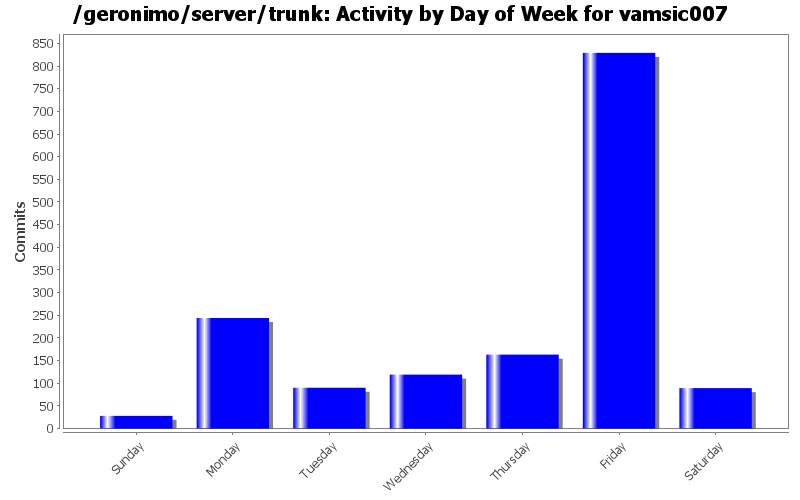
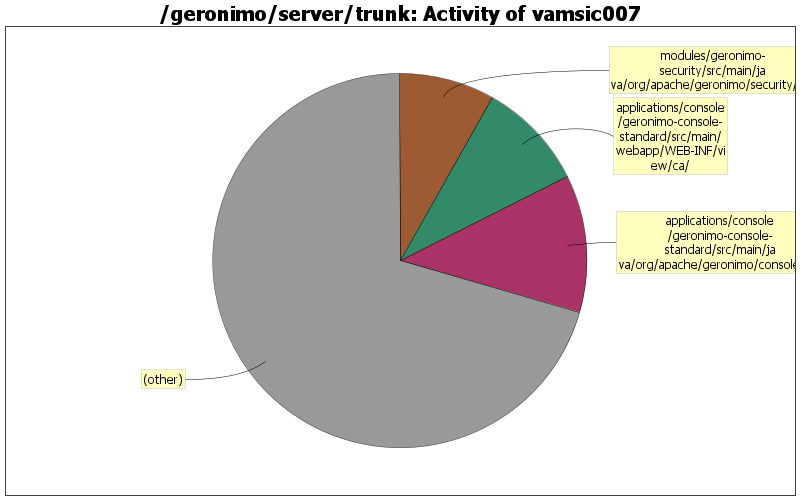

GERONIMO-5222 Add support for application validation descriptor support for deployed applications
o When the modules are packaged in an EAR, additional processing is required to obtain the validation descriptors
o Each module has its own ValidatorFactory. So, we need to keep track of the module names too in case of EARs.
68 lines of code changed in 2 files:
Throwing deployment exceptions for validator descriptor processing is resulting in TCK failures. Log debug messages instead.
12 lines of code changed in 1 file:
BeanValidation tests for EJBs
o Test for injected and JNDI bound validator factory, validator in session bean
578 lines of code changed in 12 files:
These tests are no good without the assertions. Added assertions.
36 lines of code changed in 1 file:
Formatting change
46 lines of code changed in 1 file:
Reorganize to add more bean validation tests for EJBs, Connectors, etc.
51 lines of code changed in 22 files:
GERONIMO-5222 Add support for application validation descriptor support for deployed applications
o Throw deployment exception for errors in parsing validation and constraint mapping xml
73 lines of code changed in 1 file:
GERONIMO-5221 Add naming support for Validator and ValidatorFactory
o Cache the factory instance so that a single instance is used per module
9 lines of code changed in 1 file:
GERONIMO-5221 Add naming support for Validator and ValidatorFactory
o DefaultValidator should use configured ValidatorFactory if any
12 lines of code changed in 1 file:
GERONIMO-5226 Pass container ValidationFactory to the persistance manager when creating an entity manager.
o Hook the BValModuleBuilderExtension to openejb deployer.
o Add ValidatorFactoryGBean as a parameter to PersistenceUnitGBean constructor.
18 lines of code changed in 5 files:
GERONIMO-5222 Add support for application validation descriptor support for deployed applications
o Hook the module builder extension to jetty deployer.
3 lines of code changed in 1 file:
GERONIMO-5222 Add support for application validation descriptor support for deployed applications
o Support for web applications
o ModuleBuilderExtension to add ValidatorFactoryGBean.
o Hook the module builder extension to tomcat builder.
379 lines of code changed in 6 files:
GERONIMO-3984 Keystores portlet - Unlock keystore page shows wrong label on submit button
o Merging rev 651153 from branches\2.1
o Patched unlockKeystore.jsp and consolebase.properties.
o Can someone tell me what to do about consolebase_zh.properties?
2 lines of code changed in 2 files:
GERONIMO-3955 Typo
o Thanks for the patch Joseph Leong
0 lines of code changed in 2 files:
GERONIMO-3901 Security Realms portlet - "encoding" option missing for Properties File Realm
o Added the missing properties
o Merging rev 641804 from branches\2.1
5 lines of code changed in 1 file:
GERONIMO-3875 Enabling authentication for Derby renders DB Viewer portlet unusable for all db's except SystemDatabase
o Enables using DB portlet for databases with connection pools defined.
o Merging rev 641794 from branches\2.1
0 lines of code changed in 2 files:
GERONIMO-3806 CLONE -Extraneous WARN messages during deployment of resource-env-refs in EJB jar
o Applying patches submitted by Manu and Toby. Many thanks for the patch.
16 lines of code changed in 1 file:
GERONIMO-3879 Web Access Log Viewer problems in multiple server instances scenario
o Locate the logs under the server instance directory.
0 lines of code changed in 4 files:
GERONIMO-3882 Mdb container ids not set during creation
o Set the container id
o Patch provided by Manu T. George.
1 lines of code changed in 1 file:
GERONIMO-3837 allowLinking Tomcat atttibute in StandardContext not configurable through Geronimo
o Enabling this attribute per server instance using a system property org.apache.geronimo.tomcat.GeronimoStandardContext.allowLinking
10 lines of code changed in 1 file:
(179 more)